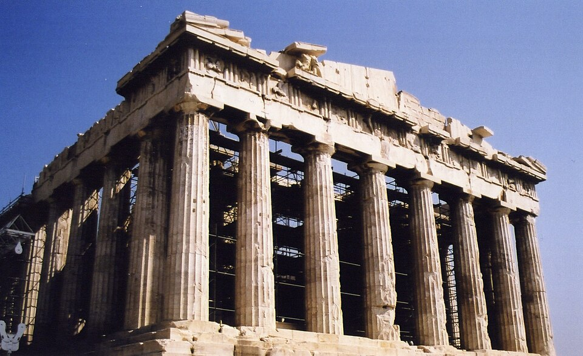
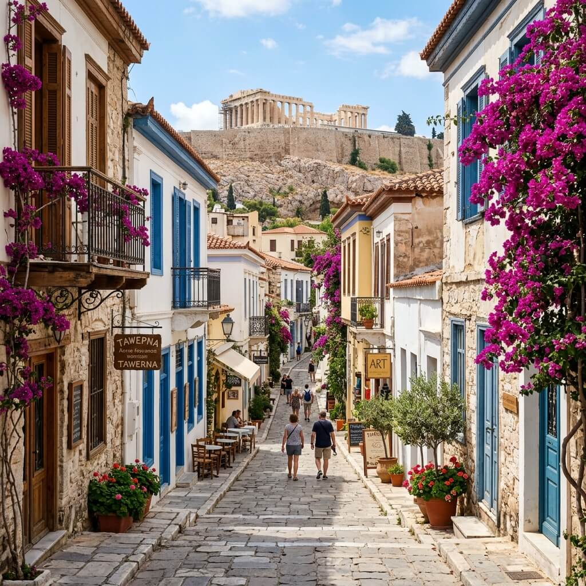

Taxi & Van Transfers
Discover the cradle of Western civilization. A complete journey through the historical highlights of Athens.
Athens is a city where ancient mythology and modern vibrancy exist side-by-side. Our private Athens City Tour is designed to give you a comprehensive understanding of the city's glorious past, picking you up from your location and driving you through the historical center in ultimate comfort.
You will witness architectural masterpieces such as the Parthenon on the Acropolis hill, experience the charm of the oldest neighborhood of Athens, and see where the first modern Olympic Games took place. Your driver will provide historical context and let you explore each monument at your own pace.
Parthenon & Erechtheion
The Neighborhood of the Gods
Your private driver will meet you at your hotel, apartment, or cruise ship port to begin the tour in our fully air-conditioned luxury vehicle.
Our first stop is the world-famous Acropolis. You will have time to walk up the hill, explore the magnificent Parthenon, the Temple of Athena Nike, and take panoramic photos of the entire city from the top.
We'll drive to the impressive all-marble Panathenaic Stadium, the historic site of the first modern Olympic Games held in 1896.
Next stop is Syntagma Square and the Greek Parliament to witness the traditional changing of the Presidential Guards (Evzones) at the Tomb of the Unknown Soldier.
We'll drive up Lycabettus Hill for the highest viewpoint in Athens, and conclude with a walk through Plaka, the charming old town full of traditional tavernas and shops before returning to your hotel.

